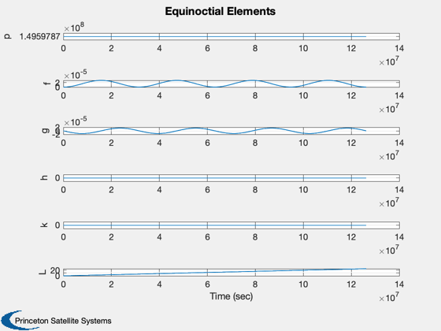
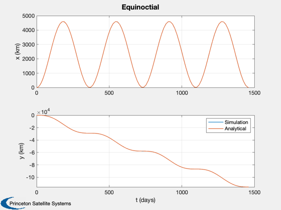

Orbit propagation test.
Propagates orbits in both equinoctial and cartesian coordinates under the influence of a small radial step acceleration. The results are compared with an analytical solution.
Since version 7. ------------------------------------------------------------------------ See also Constant, InformDlg, Plot2D, Mag, El2RV, Accel, ElToMEq, MEqToRV, RHSCartesianRadialAccel, RHSEquinoctial ------------------------------------------------------------------------
Contents
- Useful constants
- This assumes 100 kg mass, 1x1 m specular sail
- Heliocentric system
- Keplerian elements
- Initial orbit at 1 au in equinoctial
- In cartesian
- End time is 4 years
- Acceleration vector
- Integration (ode113) parameters
- Equinoctial, then in cartesian
- Transpose for plotting
- Plot the equinoctial elements
- Convert equinoctial to cartesian
- Compute the analytical solutions
- Convert into the Hill's frame
- Plot
%------------------------------------------------------------------------------- % Copyright (c) 2005-2006 Princeton Satellite Systems, Inc. % All rights reserved. %-------------------------------------------------------------------------------
Useful constants
%----------------- aU = Constant('au'); c = Constant('speed of light');
This assumes 100 kg mass, 1x1 m specular sail
%---------------------------------------------- r0 = aU; accel = 2*1367*aU^2*1e-6/(c*100)/r0^2; % km/sec^2
Heliocentric system
%--------------------- d.mu = Constant('mu sun');
Keplerian elements
%-------------------
el = [aU;0;0;0;0;0];
Initial orbit at 1 au in equinoctial
%-------------------------------------
x = ElToMEq( el, d.mu );
In cartesian
%-------------
[r, v] = El2RV( el, [], d.mu );
xC = [r;v];
End time is 4 years
%-------------------- tEnd = 4*365.25*86400; % (s)
Acceleration vector
%--------------------
d.f = [accel;0;0];
Integration (ode113) parameters
%-------------------------------- oDEOptions = odeset( 'abstol', 1e-12, 'reltol', 1e-12 );
Equinoctial, then in cartesian
%------------------------------- hDlg = InformDlg( 'Integrating...', 'PropagationDemo' ); [t, x] = ode113(@RHSEquinoctial, [0, tEnd], x, oDEOptions, d ); [tC, xC] = ode113(@RHSCartesianRadialAccel, [0, tEnd], xC, oDEOptions, d ); close(hDlg);
Transpose for plotting
%-----------------------
x = x';
t = t';
tC = tC';
xC = xC';
Plot the equinoctial elements
%------------------------------ Plot2D( t, x, 'Time (sec)', {'p' 'f' 'g' 'h' 'k' 'L' }, 'Equinoctial Elements')
Convert equinoctial to cartesian
%---------------------------------
[r, v] = MEqToRV( x, d.mu );
Compute the analytical solutions
%---------------------------------
r0 = Mag(r(:,1));
omega = Mag(v(:,1)/r0);
wt = omega*t;
xNom = accel*[1-cos(wt);-2*(wt - sin(wt))]/omega^2;
wt = omega*tC;
xNomC = accel*[1-cos(wt);-2*(wt - sin(wt))]/omega^2;
Convert into the Hill's frame
%------------------------------ x(1,:) = Mag(r(1:2,:)) - r0; x(2,:) = r0*(unwrap(atan2(r(2,:), r(1,:) )) - omega*t); clear y y(1,:) = Mag(xC(1:2,:)) - r0; y(2,:) = r0*(unwrap(atan2(xC(2,:), xC(1,:) )) - omega*tC);
Plot
%----- Plot2D( t/86400, [x(1:2,:);xNom], 't (days)', {'x (km)' 'y (km)'},'Equinoctial','lin',{'[1 3]' '[2 4]'} ); legend('Simulation','Analytical') Plot2D( tC/86400, [y(1:2,:);xNomC], 't (days)', {'x (km)' 'y (km)'},'Cartesian','lin',{'[1 3]' '[2 4]'} ); legend('Simulation','Analytical') %-------------------------------------- % PSS internal file version information %--------------------------------------